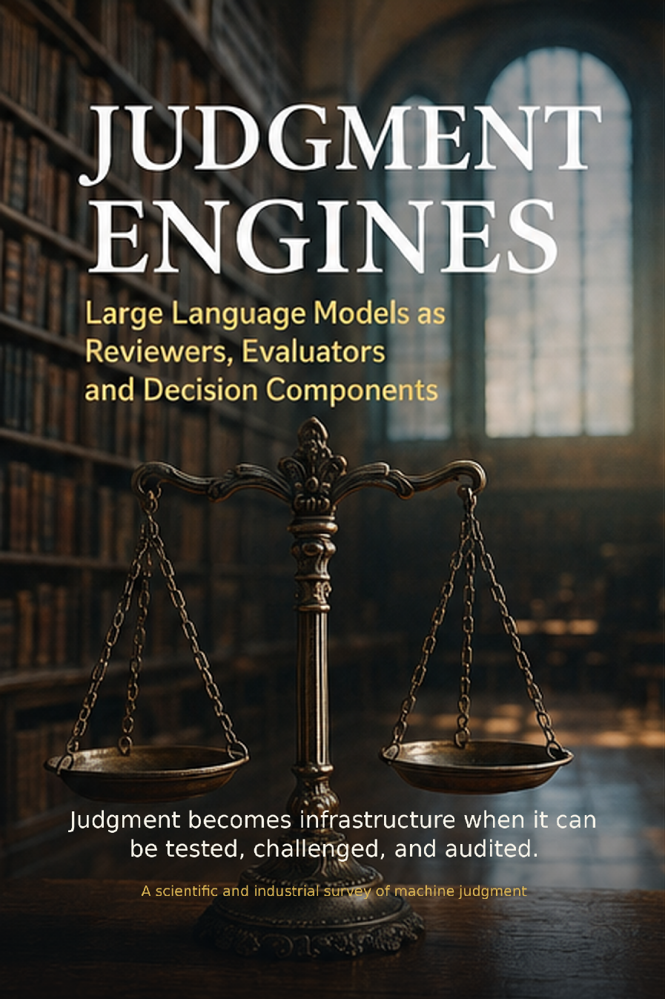

AI Systems & Infrastructure · Axiologic Research Editions
Judgment Engines
Large Language Models as Reviewers, Evaluators and Decision Components
As models increasingly judge code, knowledge, agents, and human work, this book shows how to make that judgment measurable, contestable, secure, and proportionate to the stakes.
Generation is not the only AI power
A system that evaluates can shape what work is accepted, promoted, denied, or revised. The book treats the evaluator as a socio-technical system rather than a neutral prompt.
Building a judge that can be tested
Rubrics, decomposed tasks, panels, holdouts, calibration, security, and appeal routes turn an impressive critique into an evaluation process whose limits are visible.
A judgment engine is useful only when its reasons, incentives, and failure modes can be examined.
Judgment under stakes
The final chapters address medicine, law, creativity, institutions, and the governance needed when automated evaluation begins to distribute opportunity and authority.